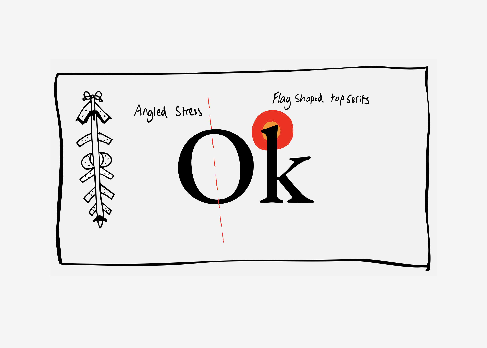
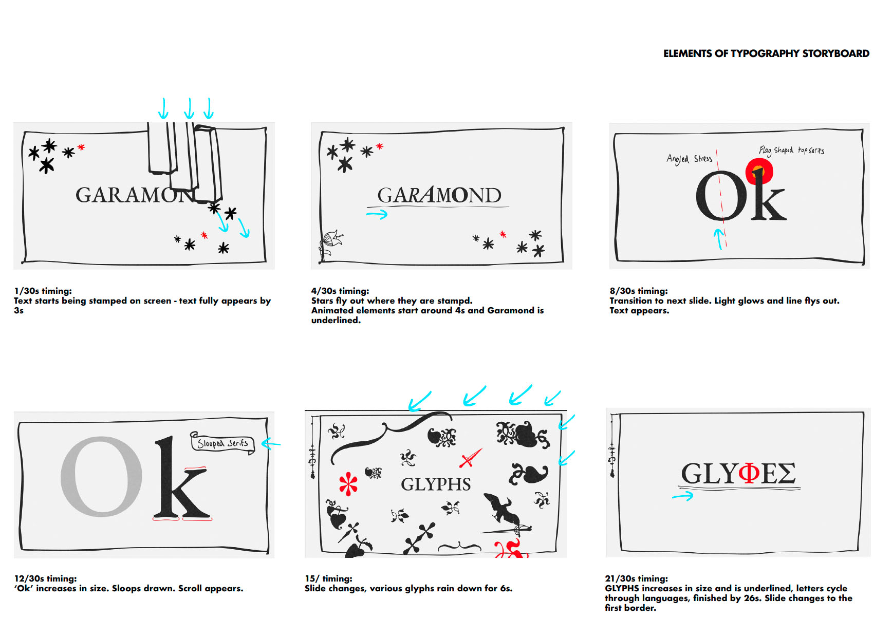
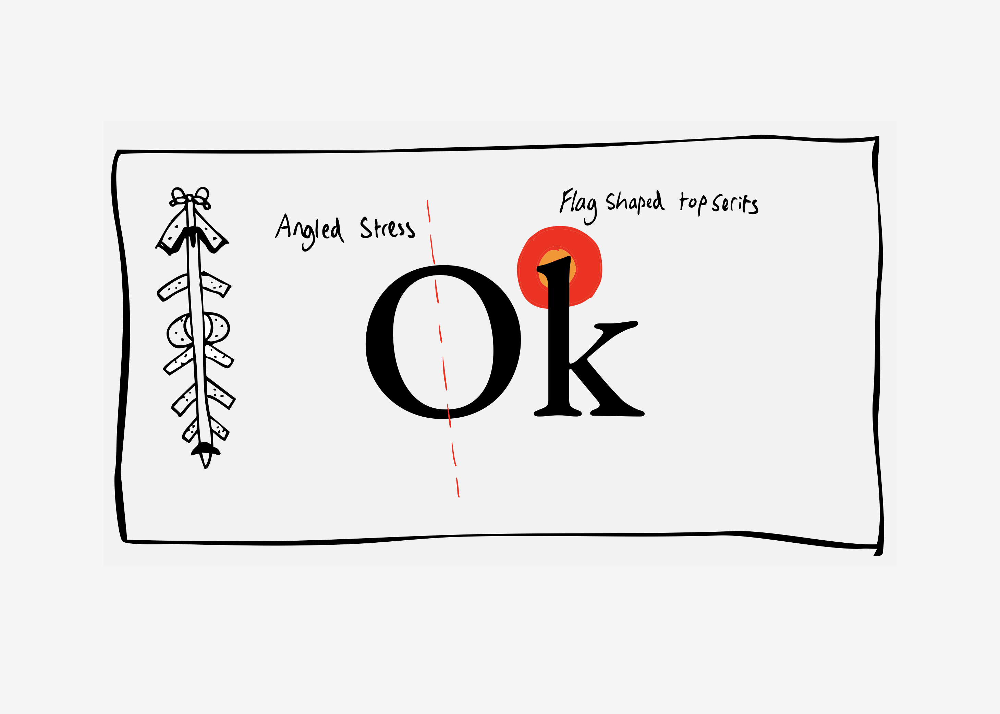
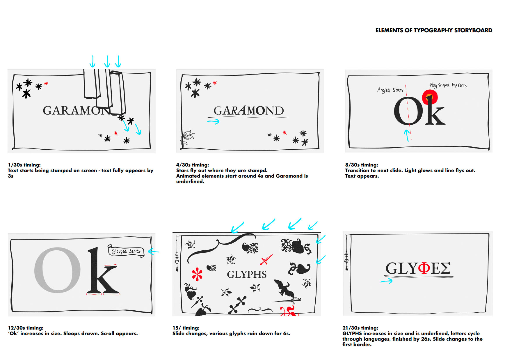
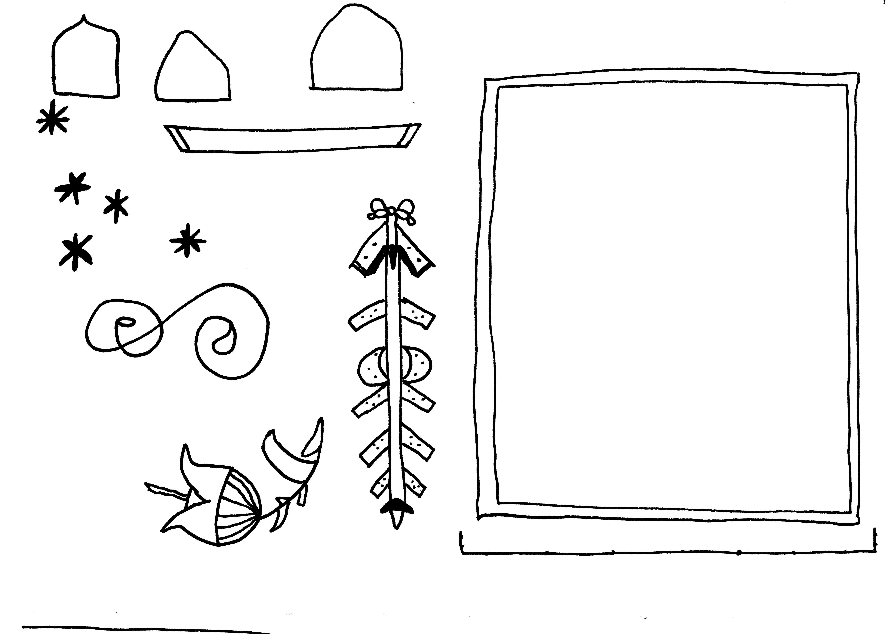
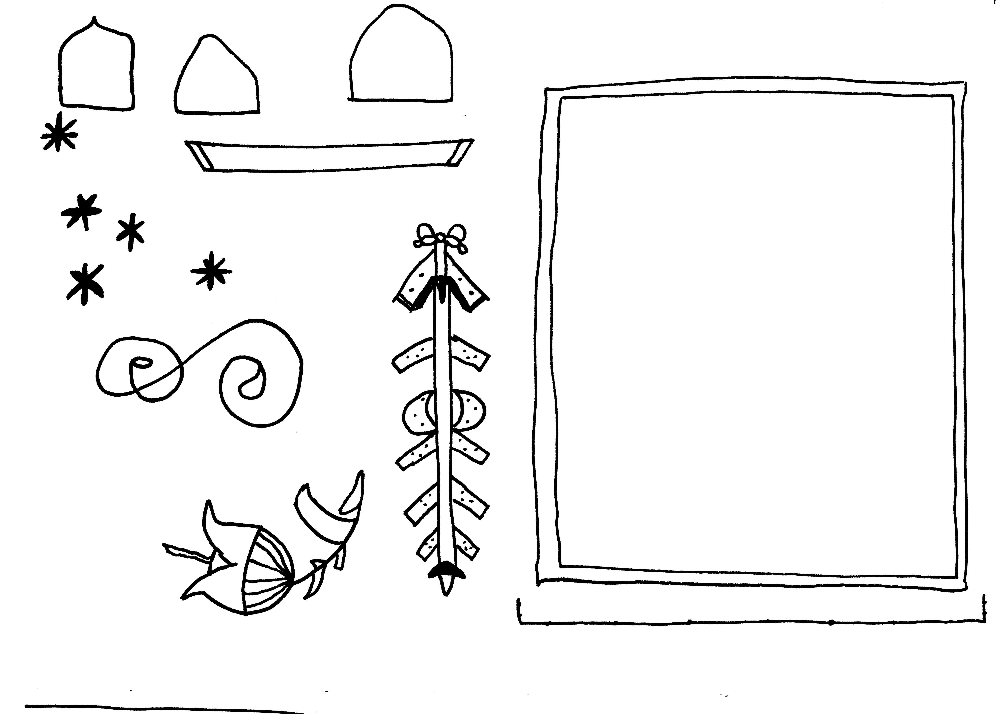

(2025)
GARAMOND ANIMATION
Garamond is a legendary typeface. Initially designed in 16th-century Paris by Claude Garamond, it has become an iconic and timeless serif typeface, having spawned numerous families of Garamond and been featured in iconic logos and texts throughout history. To honour the typeface, the animation and storyboard set out to capture the essence of 16th-century culture through handcrafted elements and ornaments typical of the time. The animation also describes five key characteristics of the font.
animation, hand-drawn elements, 1920 x 1080 px, 28s, 24fps
 



 
